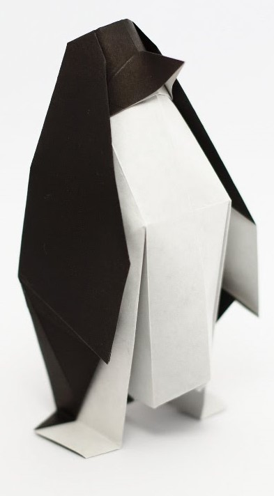

Origami Designs
About Us
Follow Us
Here are the Origamis

Facts On Penguin
- Penguins can drink sea water.
- Penguins are evolved to fly underwater.
- A penguin's tail secretes waterproof oil which the penguin apply on its feathers.
Facts On Fish
- The slowest fish is seahorse. It moves so slowly that you can hardly notice!
- Fishes have tastebuds all over their body.
- The pufferfish carries a toxin 1200 times more poisonous than cyanide.
Facts On Peacock
- Colours of the tail of the peacock would look different everytime as you change the angle of looking because of the reflection of the light.
- Even though peacocks are massive, they can fly.
- A peahen has sensors in its crestthat allow it to feel the vibrations of a mate who may be located far away.